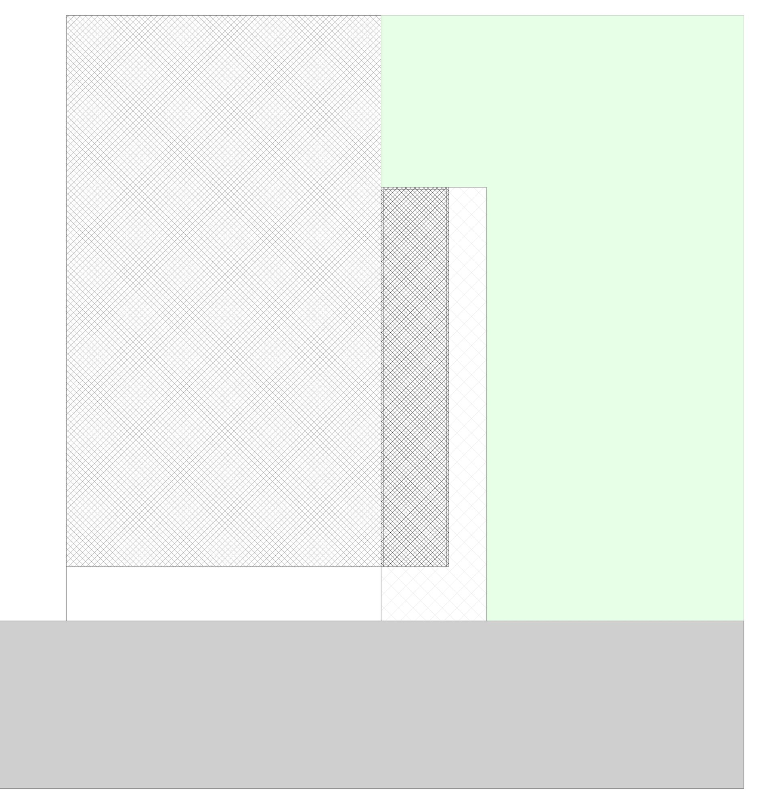
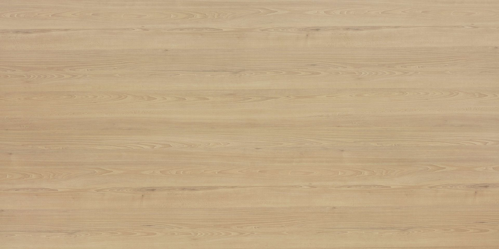
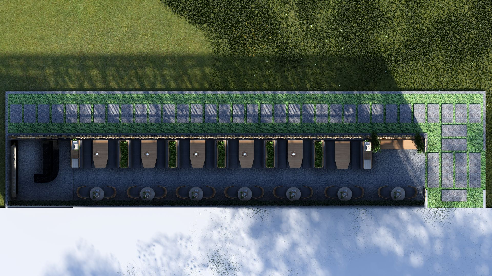
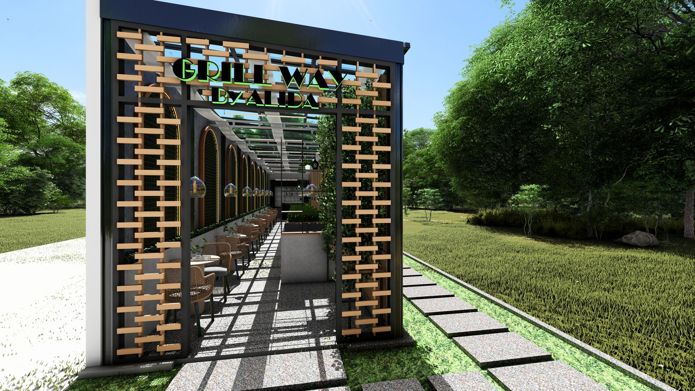

Convivialité et Design Gourmand
Grill Way est un projet de restauration moderne qui allie efficacité opérationnelle et ambiance chaleureuse. L'aménagement intérieur a été pensé pour optimiser les flux de service tout en créant un cadre accueillant et dynamique pour la clientèle.
L'utilisation de matériaux boisés, de textures industrielles et d'un éclairage d'ambiance crée une identité visuelle unique. Le projet intègre une cuisine ouverte, une zone de comptoir ergonomique et une salle à manger flexible, le tout coordonné sous environnement BIM pour une précision technique absolue.
Année
2024
Typologie
Restauration Rapide / Grill
Focus
Design Global & Flux Client



